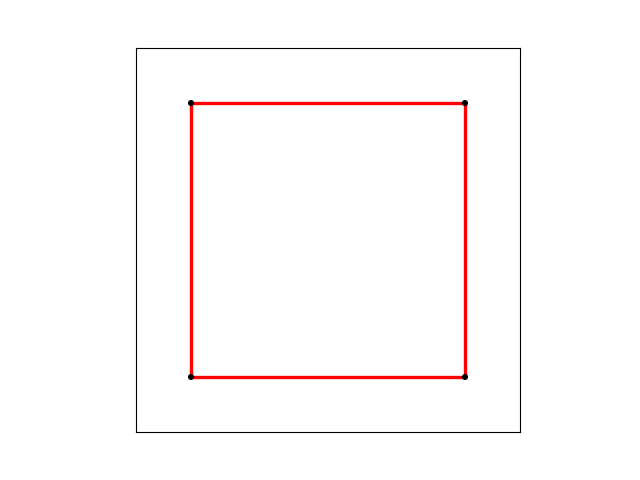
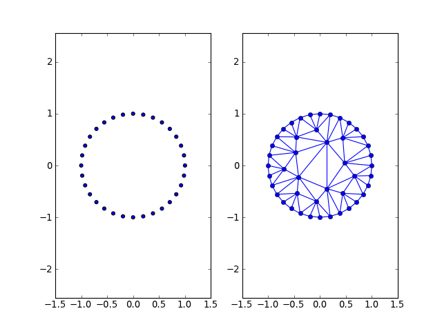

Welcome to python triangle’s documentation!¶
Triangle is a python wrapper around Jonathan Richard Shewchuk’s two-dimensional quality mesh generator and delaunay triangulator, that is available here .
Installation¶
To install simply run:
easy_install triangle
or build from source:
git clone https://github.com/drufat/triangle.git
cd triangle
python setup.py install
API¶
So far the module only consists of a single function
- triangle.triangulate(pts, maxarea=None, minangle=None)¶
>>> pts = [[0, 0], [0, 1], [1, 1], [1, 0]] >>> triangulate(pts) (array([[ 0., 0.], [ 0., 1.], [ 1., 1.], [ 1., 0.]]), array([[1, 0, 3], [3, 2, 1]], dtype=int32))
Examples¶
Let us triangulate a simple square
pts = array(((0,0), (1,0), (1, 1), (0, 1)))
triangulate(pts)
(Source code, png, hires.png, pdf)
{kind=link}
{kind=link}

In order to set maximum area of the triangles, we set the maxarea keyword
triangulate(pts, maxarea=0.1)
(Source code, png, hires.png, pdf)
{kind=link}
{kind=link}

If we want to decrease the area even further
triangualte(pts, maxarea=0.01)
(Source code, png, hires.png, pdf)
{kind=link}
{kind=link}

To do the same with a circle
from numpy import *
theta = linspace(0, 2*pi, 33)[:-1]
pts = vstack((cos(theta), sin(theta))).T
triangulate(pts)
(Source code, png, hires.png, pdf)
{kind=link}
{kind=link}

triangulate(pts, maxarea=0.05)
(Source code, png, hires.png, pdf)
{kind=link}
{kind=link}